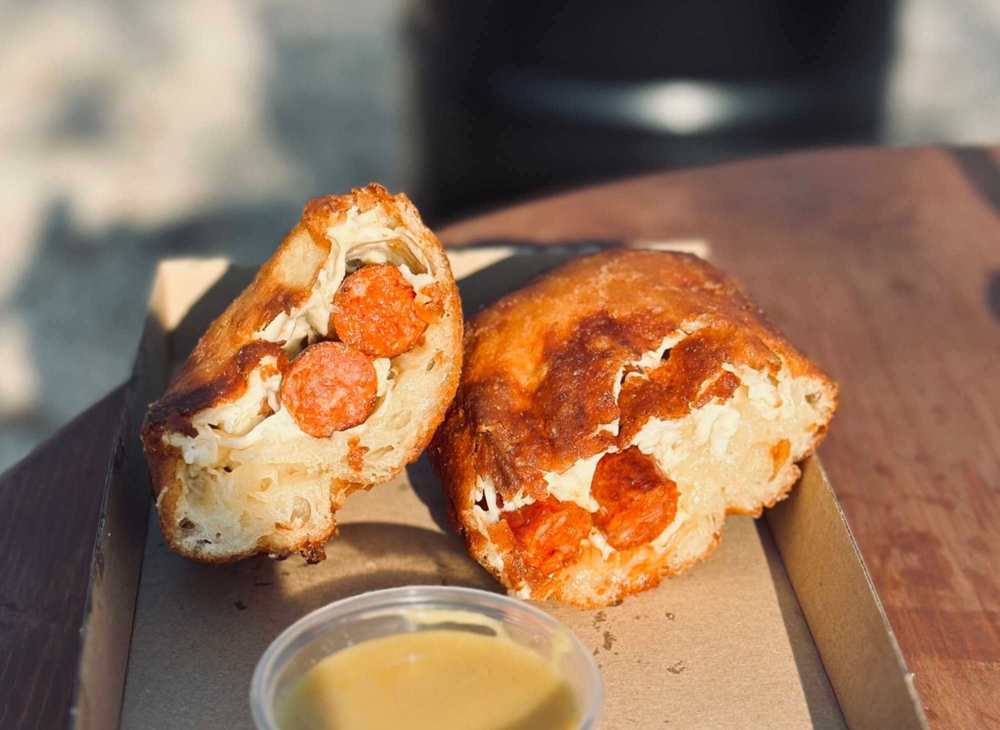
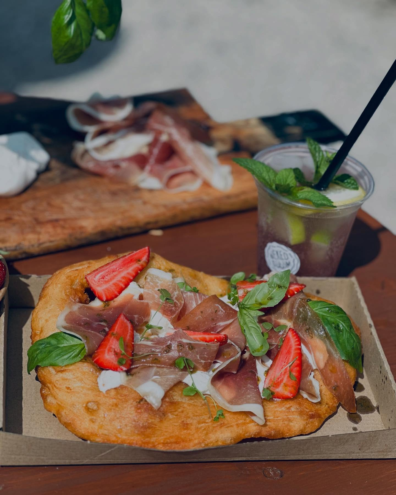
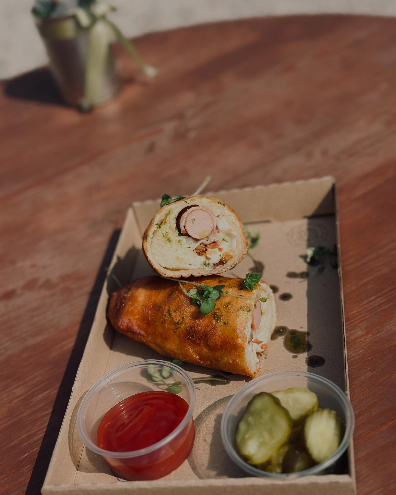
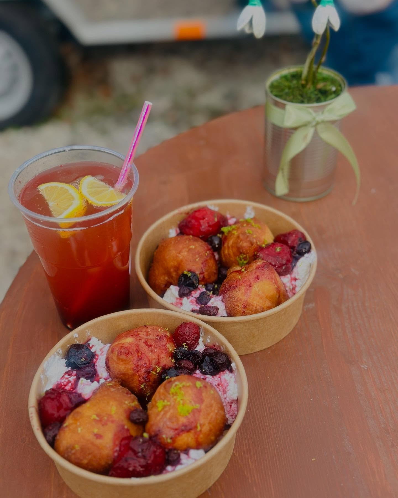

Frissen sütve minden nap
Minden lángosunkat friss, kovászos-burgonyás tésztából sütjük, naponta. Válassz az alaptól a különleges ízekig — mindenkinek van valami.
Kovászos-burgonyás tésztával, az alap — letisztult ízek kedvelőinek. A klasszikus, amit mindenki szeret.
700 Ft-tól
Tejföllel, a klasszikus változat kedvelőinek. A ropogós tészta és a krémes tejföl tökéletes kombinációja.
1 200 Ft-tól
Kettős feltéttel — igazi klasszikus kombináció. A tejföl és a sajt együtt adja azt a tökéletes ízt, amire mindenki visszajár.
1 500 Ft-tól
Ha valami szaftosabb, tartalmasabb falatra vágysz — ez a lángos neked való. Bőséges feltétekkel, hogy igazán jóllakj.
2 490 Ft-tól
Mozzarella sajttal és karamellizált körtével — egy kicsit elegánsabb, különlegesebb ízvilág. Ha valami igazán különlegeset szeretnél.
2 490 Ft-tól
A tökéletes street food élmény: bécsi virsli, ropogós bacon, pirított hagyma, olvadt sajt — ketchuppal vagy mustárral, savanyú uborkával.
2 490 Ft-tólMert a lángos után is jár valami finomság!

Nutellás mascarpone krém, sós mogyoróval koronázva. Az édesség és a só tökéletes harmóniája.

Pisztáciás eperraguval — egy igazi különlegesség, ahol a ropogós lángos találkozik a friss gyümölccsel.
Kisebb adagok a nagy lángosrajongók kis verziójában — tökéletesek gyerekeknek vagy könnyebb harapnivalónak.
Gyors kiszolgálás, friss lángos — helyben vagy elvitelre.